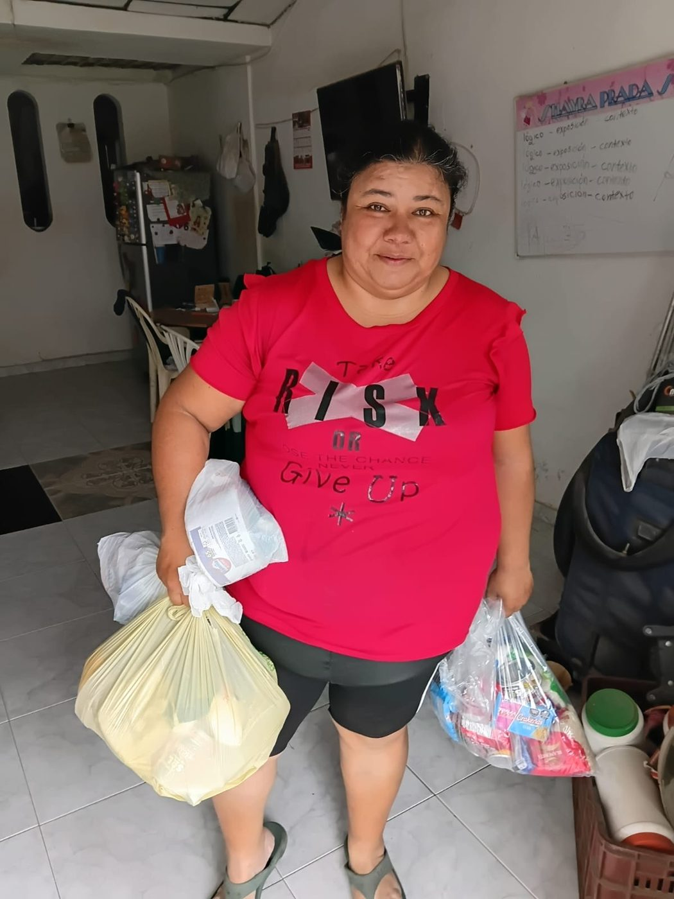
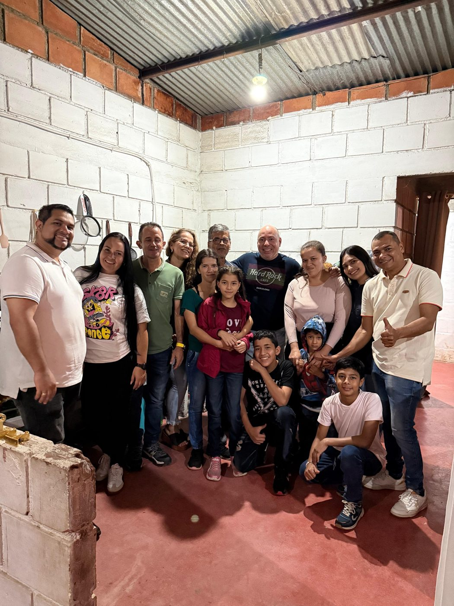
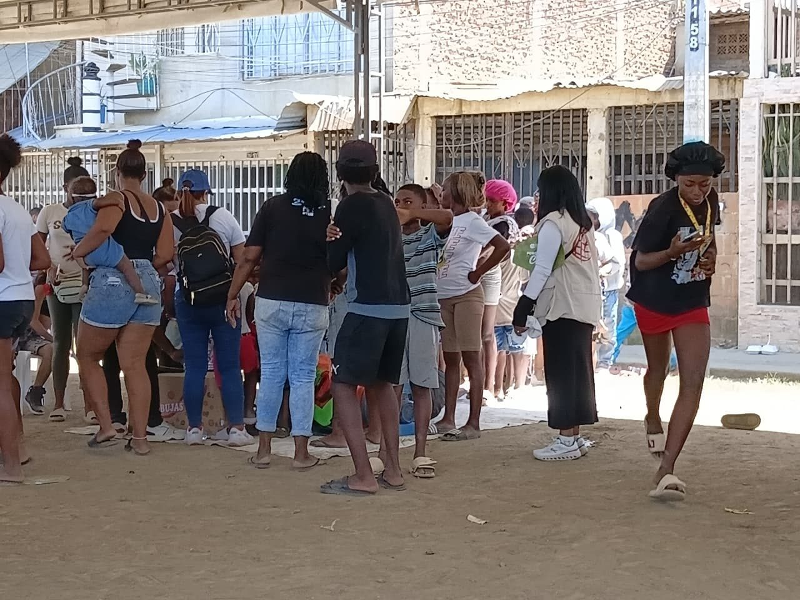

Quiénes somos
Una fundación que, desde hace 15 años, trabaja para que los derechos de las personas más vulnerables lleguen a tiempo.
Comprometidos con Colombia.
La Fundación A Tiempo por Colombia – ATIPCO es una entidad sin ánimo de lucro del Valle del Cauca. Trabajamos por la solidaridad, la ayuda humanitaria y el desarrollo social en comunidades vulnerables del país.
Misión
Somos una entidad sin ánimo de lucro con el objetivo de contribuir al mejoramiento de la calidad de vida de las poblaciones vulnerables.
Visión
Pendiente: visión de la fundación
Lo que nos compromete.
La Fundación tendrá como objeto principal contribuir significativamente al bienestar y calidad de vida de personas en situación de vulnerabilidad, impulsando su desarrollo humano integral a través de diversas iniciativas. La fundación se enfocará en promover el acceso a recursos, servicios y oportunidades que fortalezcan la autonomía, la salud, la educación, el arte, el deporte y la cultura, generando así un impacto positivo y transformador de las comunidades más necesitadas. Además, ejecutará programas de obra social orientados a mejorar las condiciones de vida de personas con discapacidad y otros individuos y/o grupos en situación de riesgo o exclusión social. Estos programas abarcarán áreas clave como la atención a la salud, la educación, la cultura, el deporte, el acceso a servicios básicos y el fomento de la inclusión social.
Donde ponemos nuestro esfuerzo.
Salud
Acceso efectivo y oportuno a servicios de salud para la población vulnerable.
Educación
Formación ciudadana crítica, participativa y sin sesgos para todas las edades.
Cultura y arte
Espacios que fortalecen la identidad y la expresión de las comunidades.
Deporte
El deporte como herramienta de desarrollo humano y convivencia.
Discapacidad
Programas de obra social para mejorar las condiciones de vida de personas con discapacidad.
Inclusión y servicios básicos
Acceso a servicios básicos y fomento de la inclusión de grupos en riesgo de exclusión social.



Conoce nuestros programas
Salud, formación ciudadana y atención en emergencia.